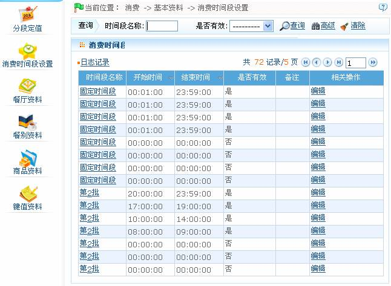
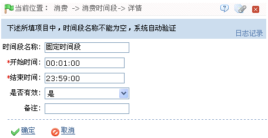

ID--8.2.2 消费时间段设置
点击【消费】 【基本资料】
【基本资料】 【消费时间段设置】图标，进入如下图所示的消费时间段设置页面：
【消费时间段设置】图标，进入如下图所示的消费时间段设置页面：
系统默认具有1个固定时间段和8个（第2批-第9批）批次时间段，每个时间段分别可以设置8个时间段。

消费时间段的编辑：
1、单击消费时间段所在行的“相关操作”下的【编辑】按钮，进入消费时间段编辑页面。

2、根据需要修改该消费时间段的各项参数。注意：“时间段名称”不可修改。时间的设置，请参见附录1 常用操作中的3. 选择时间）
当消费时间段的“是否有效”设置为“是”时，该消费时间段才有效。
3、设置完成后，单击【确定】按钮保存，并返回“消费时间段设置”页面；此时“消费时间段”列表中将显示修改后的消费时间段信息。